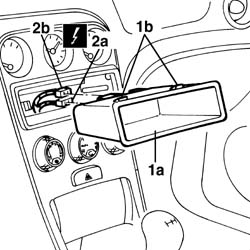

7065C84 radio compartment - r+r
- Path
- Procedures > 70 FITTINGS > 7065 SEAT BELTS AND ACCESSORIES > 7065C accessories and decorations > 7065C84 radio compartment - r+r
- Kind
- repair procedure (removal / refitting; the operation number is the code)
- Applies to
- all engines; all production periods
- Interactive page
- https://sloeber94.github.io/elrnDB-a156/en/#/3238987
Applies to: all engines; all production periods
 Removing
Removing
 Refitting
Refitting1. Remove radio compartment (1a) from stops (1b) and extract it slightly.
2. Disconnect electric connections (2a, 2b) from chambers.
 | Name | Connector |
|---|---|---|
2a | Car radio |
| Name | Connector |
|---|---|---|
2b | Car radio |

Applies to: all engines; all production periods
Refitting
RemovingInsert electric connections in chambers.
Insert radio compartment and hooking it on stops.